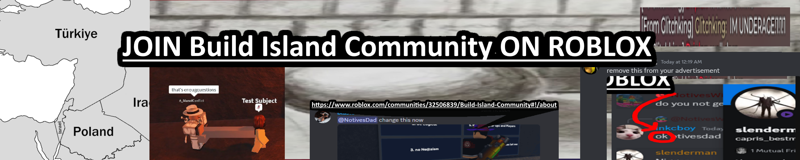
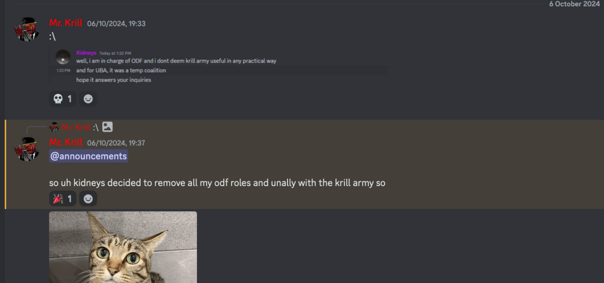
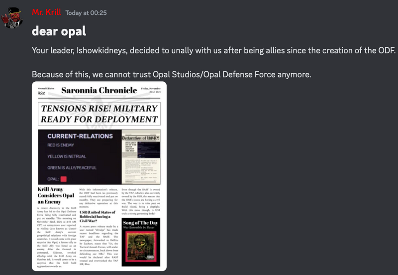

Former Valorian Ally, Krill Army, declares Opal Studio an enemy
This is an advertisement.
Published on: Saturday, 23th November 2024
Published by:  Eunoia Studios (StealthTrooper36), Edited by NachosandChipsYAY
Eunoia Studios (StealthTrooper36), Edited by NachosandChipsYAY
On the 22nd of November 2024, an anonymous user had sent AlmostAGoner (or Hellriu idfk) a screenshot of Krill Army’s public foreign relations and it showed Opal Studio as an enemy.
After this was discovered, the Opal Defence Force was reactivated and put on standby. The reason for this is likely due to Kidneys, a well known Opal Administrator, revoked their allyship with Krill Army.
The Krill Army’s response to the Opal state newspaper.
Krill army is a pretty small group and doesn’t do that much in LARP, they won’t be much of a threat to Opal Studio.
krill hasnt done a single thing in all of larp, i saw him in a battle like onceBack to Home.